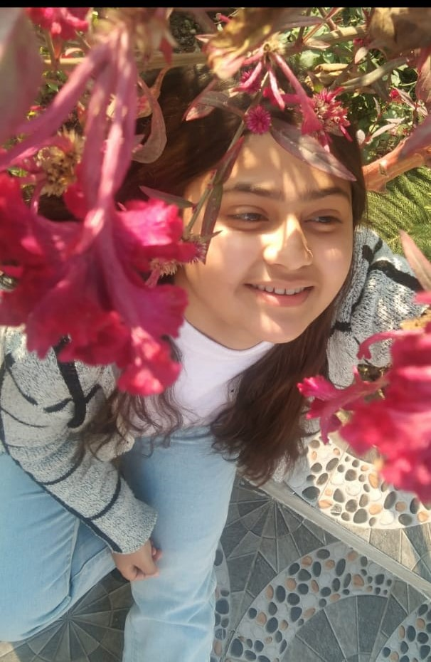
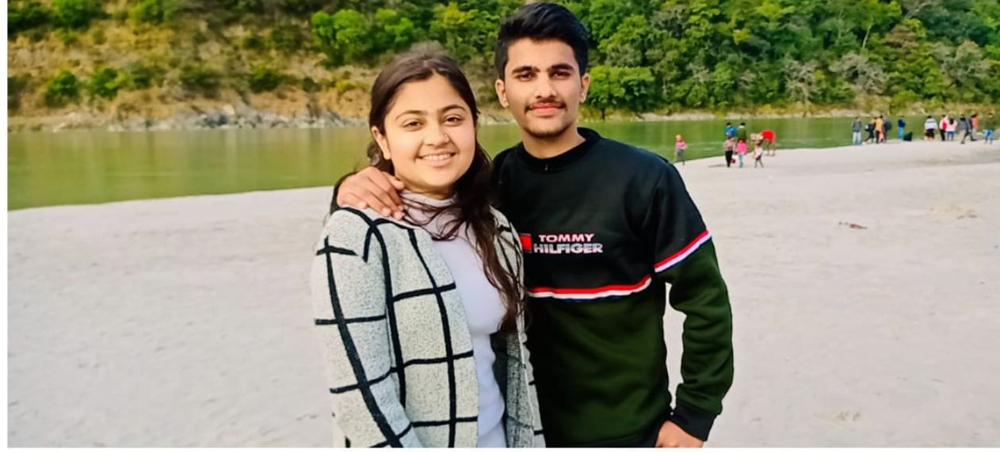
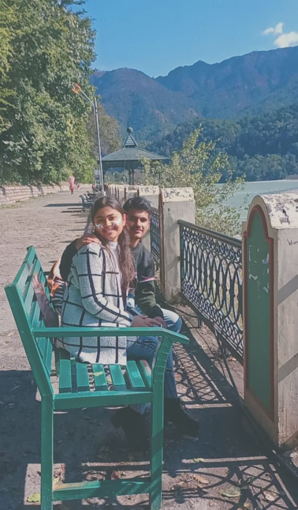

In you, I found love and laughter. Let’s make this forever, my favorite Valentine
SUHANI, Since I started loving you, I have felt alive ‚Äî even more than when I haven‚Äôt met you. I love you so much yar.You are my life. When you are with me I feel everything.I jsut forget everything, my focus remains on you.I love you foreverüíñ.
|  | Suhani since I met you, I felt that you have made me to be the best version of myself .Without you I would be a completely different person. You have taught me so much about life and because of you,I know what love is üåπ |
|  | Suhani, You are always in my heart üíï. I dream about your touch,Your scent,your smile...everything about you üíã just could not wait to have you back again im my arms and hug you üòç. When I wake up you are the first person to whom I want to talk, and last person I want to talk before I go to sleep. Suhani you are more than a friend. I always want you to talk to me,understand me, love me and be always with me❤ |
|  | Talking about memories so suhani I remember each and everything. I can't forget those moments which took place in our relationship. I remember, In 10th when you were with your friends so you used to call me, and without informing at my home, I used to come to meet you.We used to talk a lot and I just like the way when you see me and you have a very cute smile too. Suhani I know that , a lot of things has changed now. We are having so may fights and complaints. Still we are trying to save our relationship. There are some talks which neither you can forgot nor I can. Because at a point, what we say to each other, we ourself don't even know. And that causes fights and all. Suhani I don't want anything except you. I want my Suhani, like before. Suhani be like that only yar. I need you. I miss you so much yar....From the bottom of my heart, suhani I really love you yarüòò.I don't want to go far from you. I don't like to break this relatonship but I can also tolerate upto a limit yar. I am trying to go according to you. But you also understand yar. I only need little bit of your love and little time for me. Although If you can't fulfill this, so no problem. Love is forever, doesn't matter whether one-sided or both-sided. I only know that I love you, You are mine and will me mine foreverüíñ |
FROM MOHIT TO SUHANIüíï |